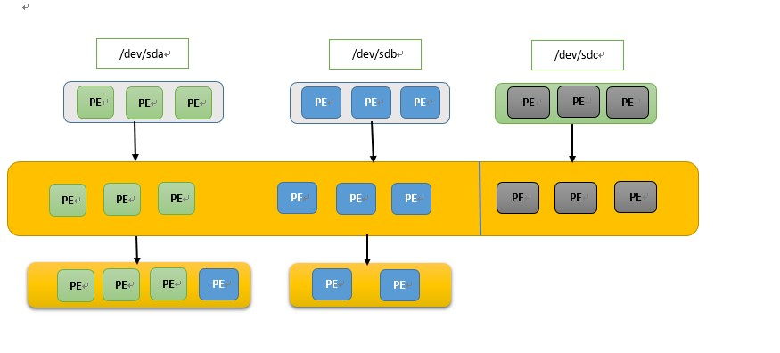

LVM是Logical Volume Manager逻辑磁盘卷的简称，它是Linux环境下对磁盘分区管理的一种机制。它可以在运行的系统直接调整分区空间大小，
是一种安全无痛的操作。
写这个的原因是经历过一次很无奈的系统故障，运行数据库的机器磁盘写满，而系统的报警通知没有发出(各种喜剧性的巧合真实的凑到一起了)，导致整体应用无法使用。幸亏之安装系统使用了LVM，这个故障很快就解决。
LVM是介于物理存储分区和文件系统之间的逻辑分区，他将一个或者多个物理分区(如:磁盘或者RAID)分为若干个最小逻辑单元，LVM分区建立在这些最小的逻辑单元上，文件系统建立LVM逻辑分区之上，当文件系统空间不够时，通过调整逻辑分区中的最小逻辑数量来动态改变系统空间大小。
物理存储介质（The physical media）：这里指系统的存储设备：硬盘，如：/dev/hda1、/dev/sda等等，是存储系统最低层的存储单元。
PV: 物理卷（physical volume）。物理卷就是指硬盘分区或从逻辑上与磁盘分区具有同样功能的设备(如RAID)，是LVM的基本存储逻辑块，但和基本的物理存储介质（如分区、磁盘等）比较，却包含有与LVM相关的管理参数。
VG: 卷组（Volume Group）：LVM卷组类似于非LVM系统中的物理硬盘，其由物理卷组成。可以在卷组上创建一个或多个“LVM分区”（逻辑卷），LVM卷组由一个或多个物理卷组成。
LV: 逻辑卷（logical volume）：LVM的逻辑卷类似于非LVM系统中的硬盘分区，在逻辑卷之上可以建立文件系统(比如/home或者/usr等)。
PE: 每一个物理卷被划分为称为PE(Physical Extents)的基本单元，具有唯一编号的PE是可以被LVM寻址的最小单元。PE的大小是可配置的，默认为4MB。
LE: 逻辑卷也被划分为被称为LE(Logical Extents) 的可被寻址的基本单位。在同一个卷组中，LE的大小和PE是相同的，并且一一对应。
LVM工作原理是简单描述，通过将底层的物理磁盘抽象封装起来，然后以逻辑卷的方式呈现给文件系统；而我们传统的磁盘管理中，应用程序直接访问文件系统，文件系统直接建立在物理分区之上，对物理磁盘分区改变对上层应用有直接的影响。有了LVM之后， 在应用与磁盘之间增加了逻辑卷，对物理磁盘的上层应用是感知不到的。因此可以在应用运行的同时动态调整逻辑卷大小，提高磁盘管理的灵活性。

1.将我们的物理硬盘格式化成PV
上图，我们有3块磁盘，sda, sdb和sdc, 我们首先要将这3块磁盘格式化为PV，假设每块磁盘400m, 那么每块磁盘就被划分为100个PE最小逻辑单元， 因为PE默认值是4M。格式化磁盘为PV其实就是将磁盘划分为一个个的PE。
2.创建一个VG
创建好PV之后，我们将不同的PV加入到VG中，图中的第二层。创建VG其实就是将若干PE封装成一个大的PE池，然后在这个之上划分LV。
3.基于VG创建LV
PV以及VG创建好以后我们是不能够直接使用的， 需要创建LV，图上第3层。创建LV的过程其实，就是拿出不同数量的PE，这些PE肯能来自不同磁盘，图中蓝色块。
文件系统就是建立在LV只是，LV的大小是PE整数倍，默认是4m, 16m, 32m等等。
4.在创建好的LV之上进行文件系统的格式化，然后挂载使用
LV创建好后，就能对其进行文件系统格式化如ext3，并且挂载使用。当某一文件系分区空间不够时，我们个随时给LV添加PE数量，来改变分区大小，这个过程数据不会丢失，也不需要重启系统。